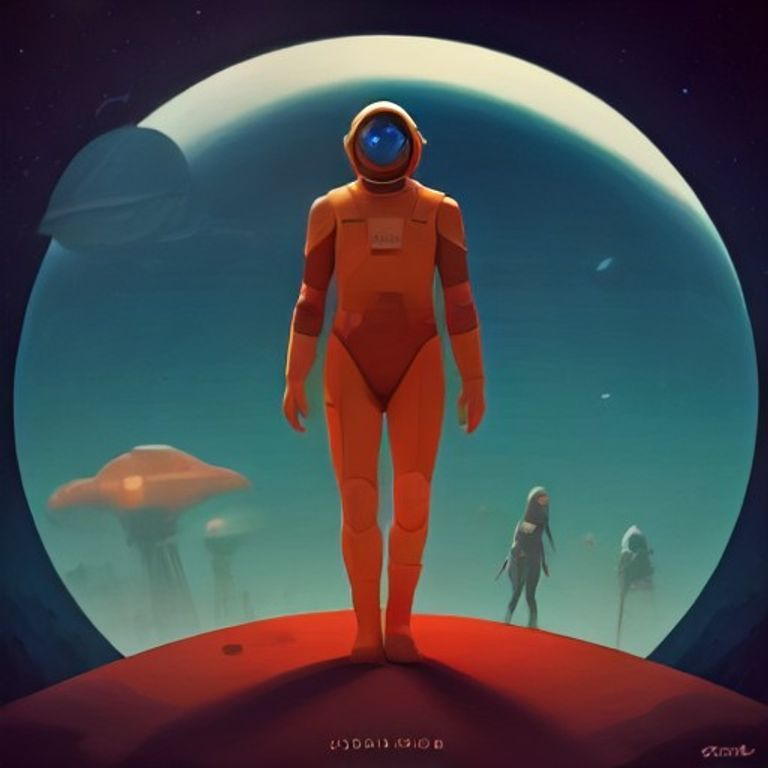

Кузнечный Горн Архитекторов

Зал бортовой лаборатории исследовательского корабля «Искра» напоминал сейчас не столько строгий научно-исследовательский отсек, сколько кипящую мастерскую увлечённого космического инженера, где правила классической физики переплетались с древними загадками Вселенной. Шестой модуль, поднять который стоило экипажу невероятных усилий в самых глубинах великой энергетической паутины, теперь надежно покоился на массивных магнитных захватах. Код Созидания, окончательно расшифрованный после долгих споров, научных гипотез и компьютерного моделирования, вспыхивал на голографических проекторах полупрозрачными математическими формулами и удивительными пространственными чертежами.
— Если мои навигационные вычисления не врут, — задорно проговорил Ветрос, совершая виртуозный разворот на своем кресле и едкими струями маневрового газа случайно обдав чувствительные датчики Терроса, — то эта древняя металлическая штуковина — не просто заархивированная библиотека знаний. Это самый настоящий космический компас! И он указывает прямо в самый глухой сектор, где, судя по официальным звездным картам Галактического Союза, не должно быть абсолютно ничего, кроме застывшей космической пыли и редкого реликтового излучения.
— В космосе никогда не бывает «абсолютно ничего», — степенно и веско отозвался Террос, поправляя тяжелые датчики вибрации на своей массивной металлической подвеске. — Даже там, где наши оптические приборы фиксируют лишь непроглядную мрак и холодную пустоту, материя оставляет свой незаметный, но вечный след. Земля чувствует структуру пространства гораздо лучше любых электромагнитных индикаторов.
Драгос громко выпустил из выхлопных патрубков облако раскалённого озона и нетерпеливо зарычал своей поршневой группой:
— Меня в вашей теоретической физике и философии волнует не столько след, сколько элементарный термодинамический баланс! Шестой модуль забирает хорошую треть мощности моего основного термоядерного реактора. Если мы продолжим двигаться в таком предельном режиме, моё синтетическое масло закипит гораздо быстрее, чем мы доберёмся до ближайшей исследовательской станции. Материос, дружище, ты можешь объяснить этому древнему железу, чтобы оно не расходовало мою энергию с таким отменным аппетитом?
Материос, который после всех прошлых испытаний больше не казался пугливым и неуверенным новичком, с тёплой улыбкой качнул своим обновлённым металлическим крылом.
— Он не уничтожает твою энергию, Драгос. Он трансформирует её. Этот модуль создаёт особое резонансное поле, которое защищает «Искру» от тех опасных пространственных сдвигов, с которыми мы сталкивались возле хроно-узла. Пятая стихия — это связующая структура, а Шестой модуль — её великий усилитель. И мы уже практически у цели.
Аквас замер у главного обзорного экрана, внимательно наблюдая за тем, как гидролокаторы и оптические спектрометры рисуют сложную объемную картину окружающего пространства.
— Взгляните на датчики излучений, — тихо произнёс он, проводя ладонью по мерцающему сенсору. — Межзвёздный газ огибает этот сектор по идеальной дуге, будто сталкивается с невидимым, но плотным куполом. Это точно такой же магнитный ритм, какой мы слышали на планете сияний, но его мощность превосходит все прошлые измерения.
«Искра» плавно вынырнула из гиперпространственного прыжка и застыла. Перед экипажем развернулась картина, заставившая даже неунывающего Ветроса на мгновение потерять дар речи. В полной темноте парило гигантское кольцо, диаметром в сотни километров. Оно было создано из того же серого металла, что и древние башни Некрополя, но здесь этот металл не казался мёртвым: он был пронизан пульсирующими золотистыми нитями — точь-в-точь как узоры в кристаллическом Лабиринте.
В самом центре этого колоссального сооружения вращался узел сфокусированного поля — Кузнечный Горн Архитекторов. Это была грандиозная машина, способная собирать разрозненные атомы и заново конструировать целые миры, возвращая жизнь выжженным или увядающим планетам.
Шестой модуль на борту «Искры» вдруг откликнулся чистым, звонким гулом. Из его центрального излучателя вырвался сфокусированный фотонный луч и ударил прямо в сердцевину кольца. Древний механизм ожил: золотые нити вспыхнули ослепительным светом, и в центре конструкции на глазах у изумленного экипажа начал формироваться зародыш новой планеты — сияющая голубая сфера из уплотненной материи.
— Они создают настоящую материю прямо из пустоты, — прошептал Террос с глубоким уважением к мастерам прошлого.
Но в следующий миг главная консоль Горна замигала тревожным янтарным светом. Процесс синтеза резко замедлился, а на экранах «Искры» проступило древнее сообщение, которое Материос мгновенно перевёл: «Для окончательной стабилизации планетарной матрицы требуется прямой ментальный контакт пяти био-стихий. Внимание: запуск процесса приведет к полной перезагрузке энергетического ядра вашего корабля».
Смогут ли пять био-вотчкаров объединить свои разумы и энергии в единую цепь, не потеряв при этом собственную индивидуальность, и каков будет лик того нового мира, который родился в пламени этого древнего Кузнечного Горна?